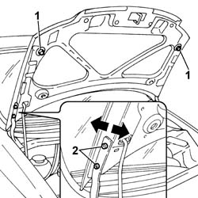

7025A10 bonnet lid - square
- Path
- Procedures > 70 FITTINGS > 7025 COMPARTMENT LIDS > 7025A bonnet lid > 7025A10 bonnet lid - square
- Kind
- repair procedure (removal / refitting; the operation number is the code)
- Applies to
- all engines; all production periods
- Interactive page
- https://sloeber94.github.io/elrnDB-fPnd/en/#/2753134
Applies to: all engines; all production periods
Lift up the bonnet lid.
If necessary, adjust the position of the lock as described in the procedure:
7025A34 bonnet lid lock (one) - r+r or repair
1. If necessary, adjust the position of the buffers.
2. If necessary, loosen the bolts fixing the hinges and adjust the position of the bonnet lid.
Tighten the hinge bolts.

Applies to: all engines; all production periods
If the adjustments described above are insufficient, adjust bonnet lid hinge position as described below.
5050B34 windscreen wiper arm/s complete with blade - r+r (Both)
7210E22 R.R. WINDSCREEN BASE TRIM
Loosen the bolts fixing the bonnet lid hinges to the bodyshell.
Adjust the position of the bonnet lid hinges moving them in the four possible directions until the bonnet lid is aligned.
Tighten the bolts fixing the bonnet lid hinges to the bodyshell to the recommended torque.
 | Fastening | Component | Ø | Value (daNm) |
|---|---|---|---|---|
- | Bolt | BONNET LID HINGES | M8 | (Bodyshell side) 2.4 |
Topics linked from this page (3)
- 5050B34 windscreen wiper arm/s complete with blade - r+r
- 7025A34 bonnet lid lock (one) - r+r or repair
- 7210E22 R.R. WINDSCREEN BASE TRIM